Install the WaveForms software, if you haven't already. See Installer Details for more information.
Connect your board to your PC using the USB connector and the supplied USB cable.
Start the WaveForms application from the Start Menu > All Programs > Digilent > WaveForms Application > WaveForms.
The application starts and connects to your board.
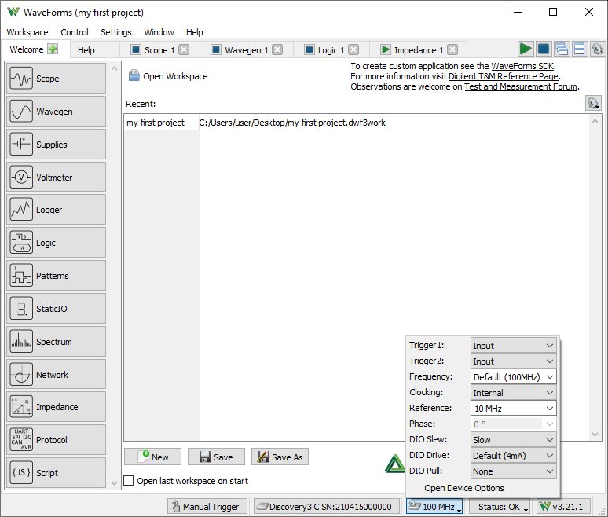
Only one application can be connected to one board at a time. If you get the message “The selected device is being used by another application”, check the taskbar for other applications in use.
If the application is not working as expected, try starting the WaveForms application from the MS Windows Start Menu > All Programs > Digilent > WaveForms Application > WaveForms Safe Mode or the WaveForms application with “clear” parameter.
See the device specific troubleshooting for more information:
The WaveForms's main window Welcome tab (shown above) has buttons for each instrument: Scope (Oscilloscope), Wavegen (Waveform Generator), Supplies, Logger, Logic (Analyzer), Patterns (Generator), Static I/O (Digital Input/Output), Spectrum (Analyzer), Network (Analyzer), Impedance (Analyzer), and Script instruments. The instruments can also be opened from the Welcome tab “+” (add) menu.
An instrument's button is disabled when the selected device or configuration does not support it.
The Settings menu contains the Options, the Device Manager, and Manual Trigger.
The Workspace's Open, Save, and Save as buttons allow the user to load or save WaveForms workspaces.
When an instrument is closed, its state is saved and loaded when reopened. The New button creates a new workspace, which can be used to close the instruments that are currently open while also forgetting the last instrument configurations.
The status bar of the WaveForms main window displays the device name and serial number, as shown below. Clicking on this will open the Device Manager.
The following button opens the Device Options.
The status button opens a drop-down listing device monitoring depending on device, voltages, temperature...
The Run/Stop All buttons start or stop all the instruments. In case multiple tools are opened using the same resource, like Scope and Spectrum Analyzer, the last used one will be started. If Script tool is opened only this will be started.
The following two buttons switch between Tabbed and Docking Windows.
The last gear button opens the Application Options.
The workspace refers to any open instruments and their current state. The workspace can be loaded and saved with the Open and Save/Save As buttons in the WaveForms's Welcome tab.
The workspace and instrument project can be saved in one of the following modes selected by the save filter:
The workspace files are associated with WaveForms. When you open a workspace (double-click on a *.dwf3work file) and WaveForms is running, it will be opened with the last used application instance. Otherwise, if WaveForms is not currently running, it will open with a new application instance.
The project refers to an instrument and its current state. The project can be loaded and saved with the Open and Save buttons in each instrument.
The project files are associated with WaveForms. When you open a project (double-click on a *.dwf3scope, *.dwf3wavegen, *dwf3logic, ... file) and WaveForms is running, it will be opened with the last used application instance. Otherwise, if WaveForms is not currently running, it will open with a new application instance.
The New button closes the current project. It can also be used to clear the last settings of the instruments.
The Extract/Compress unpacks the workspace archive. It can be used to extract raw capture data and configuration files.
The Compare can be used to compare multiple workspaces, listing capture device Serial Numbers, date-times, highlighting duplicate SNs.
The Options window allows you to select various display and configuration preferences.
To open the Options window, select the Settings / Options menu from the WaveForms window.
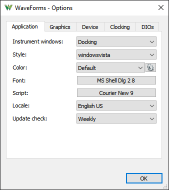
Application options: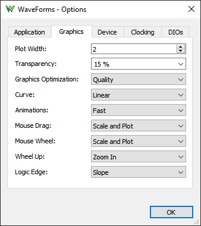
Graphics options: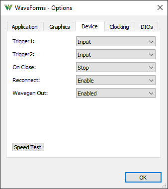
Device options: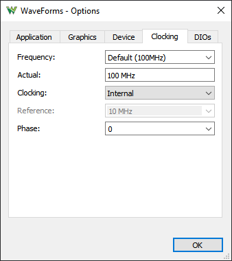
.
Clocking options: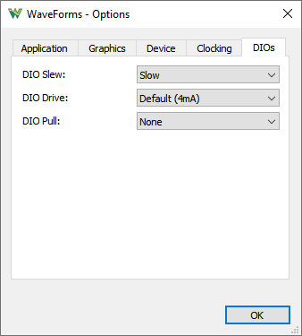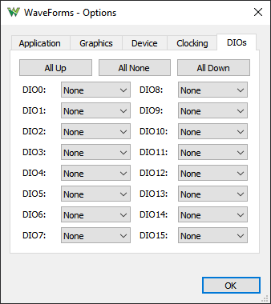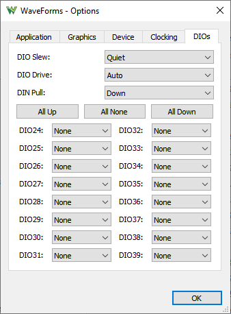
DIO options:Shortcuts can be added which will execute application level scripts. See the Script for details. Make sure the added hotkeys are not in conflict with existing ones used in the application and instruments.
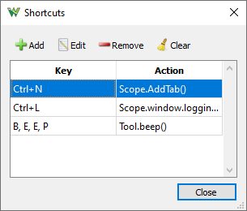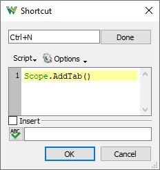
The Device Manager allows you to select the device and configuration to use with the WaveForms application.
To open the Device Manager, select the Settings / Device Manager menu or click on the window's status bar device button from the WaveForms window.
The Select + Dual button lets you connect to two devices.
- Either to two identical devices to control these at the same time, to double the Scope, Wavegen and DIO channels. The Trigger IOs will be used to synchronize the device.
The reference clock option is available with ADP3X50 and Analog Discovery 3. The clock phase may need to be adjusted for stable triggering which is affected by the trigger wiring and DIO drive/slew setting. The Dual Delay option can be used to compensate the latency, in Scope under Time/Options, in Wavegen, Logic Analyzer and Pattern Generator under the top-right COG.
When devices without reference clocking capability are used the signals may show jitter and shift over time.
The dual mode has some limitations since one trigger line is used for cross-triggering so Scope and Logic Analyzer can't be used at the same time but Digital channels can be added to Scope interface. The Wavegen and Pattern Generator uses the same trigger line which is used to start the respective instrument. The dual mode for this is working with no trigger option and zero wait.
- The additional device can also be a power supply device (DPS3340). In this case the the DPS can be controlled by DiscoveryPS tool in the main tab's instrument list.
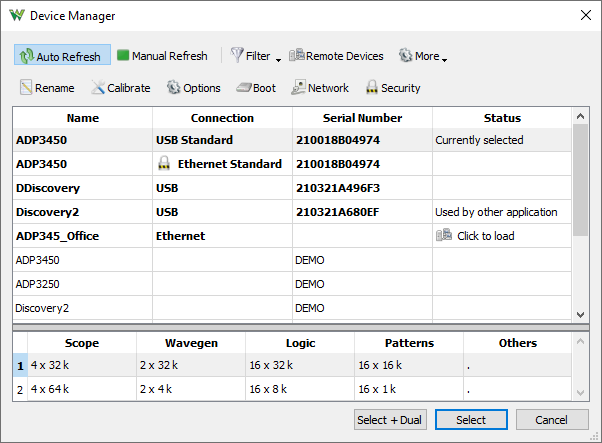
Devices list: Select the device you want to use. The Demo devices allows you to explore WaveForms' capabilities without a physical device being connected to the PC.
Configurations list: Select the configuration you want to use for the selected device. The configurations have different device buffer-memory distributions for the instruments and other capabilities, such as digital input standards.
Each device is calibrated during manufacturing test procedure. The calibration data is stored in the device non-volatile memory.
The Device Calibration window allows you to calibrate (fine-tune) a device's analog components, such as the read-voltage levels of the Oscilloscope or Voltmeters, the output level of the Waveform Generator, Adjustable Power Supplies of the Electronics Explorer board, or the Oscilloscope and Waveform Generator of the Analog Discovery device.
The calibration frequency depends on the requirements. It can be done monthly, yearly, biannually or never, or before any critical project.
Start the Device Calibration window from the WaveForms main window Settings / Device Manager.
The following window will open. The items in the calibration list depend on the selected device type.
It is recommended to let the device to heat up for 5-10 minutes, to reach its operational temperature.
Clicking on the links in the Calibration tab to perform calibration of subsystems.
The Wizard can be a long process. It is better to perform the calibrations steps separately.
The Oscilloscope offset error can be compensated in the Scope instrument under Time and Channel options, Zero offset.
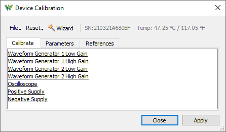
The 10X oscilloscope probes need to be compensated with the used channel. The input impedance of devices and channel may differ which needs to be tuned to match the 10X probe.
To perform this, generate a 1-5kHz square signal and adjust the trimmer on the BNC end, until you see a correct square wave in the oscilloscope. The Network Analyzer can also be used for the adjustment.
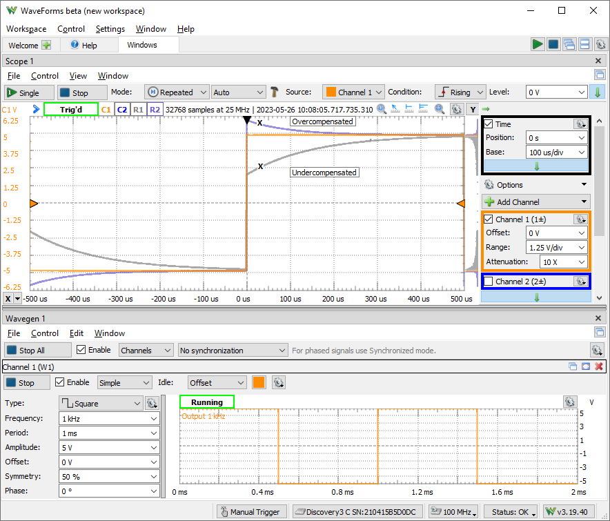
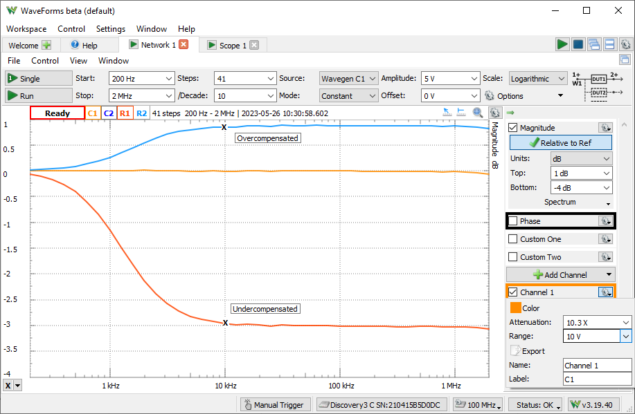
The menu strips of the instrument windows generally have:
The mouse operations for lists, like for measurements, Logic Analyzer, Pattern Generator signals, are as follows:
| select | select | move |
| 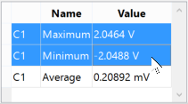 | 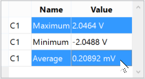 | 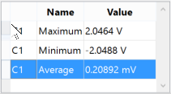 |
The center of the plot is marked with grid lines. Each vertical and horizontal line constitutes a major division. For linear scales, these are laid out in a 10x10 division pattern. The tick marks on the axis between major divisions are called minor divisions. For logarithmic scales, major ticks are shown for each decay value and minor ticks for 2,3,4... points.
The plots and axes allow the following scaling adjustments:
Each plot has a button in the top-right corner which opens a drop-down menu (or mouse right-click) containing options for:
The Quick Measure allows you to take measurements by moving the mouse cursor. It has the appearance of a vertical cursor and it displays values such as amplitudes, periods, or frequencies where it intersects with the waveforms present in the view. This can be enabled and disabled with the toggle button in the top-right corner, or by double-clicking on the plot. Clicking on the plot locks or unlocks the Quick Measure to its current position.
The Show entire capture sets the time position/base or start/stop frequencies to show the entire capture.
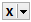
The Cursors are used to measure waveform data. They can be used to indicate certain properties of the waveform, such as bandwidth or channel limits. Using delta cursors, you can make measurements for power change with frequency or time. These can be added by pressing the X button in the plot bottom left corner. The Y cursors in the Scope main time plot can be added by pressing the Y button in the top right corner. The first cursor is by default added as a normal cursor, the following ones are added as delta of the first cursor, displaying the difference. The cursors position can be modified by a mouse drag, keyboard arrow keys, or adjustment control in the cursor's drop-down menu. Mouse button middle click removes the cursor. The cursors can be selected with the channel number shortcut, pressing 1, 2,..
The Cursor view enabled in the instrument's View menu shows the position and measurements in a table. The cursor's drop-down menu and table contain adjustment controls for the reference cursor selection, position, delta value relative to reference cursor, and remove button. For horizontal cursors, the position is expressed in horizontal axis units while the vertical value is shown in intersection with each waveform.
The docking window's functionality gives you flexible organization of docking windows within the parent window.
The windows can be dragged by their top border. When dragging is above the margins of the parent window, it will indicate the drop region. If you release the mouse, the child window will be docked to the corresponding margin. If you position a child window above another child window with same parent, it can dock in tabular mode. Releasing a window outside of drop regions makes the window float.
The Export dialog lets you save the data or screen-shot. The data can be saved as CSV (comma separated values), TXT (tab delimited values) and NI TDMS format. By checking the save options, the following information will also be saved:
The screenshot image can be saved in various image formats with options to overlay Comments like Device Name, Serial Number, and Time.
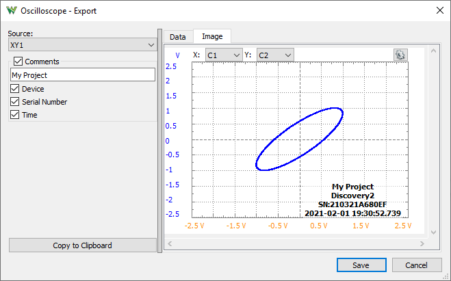
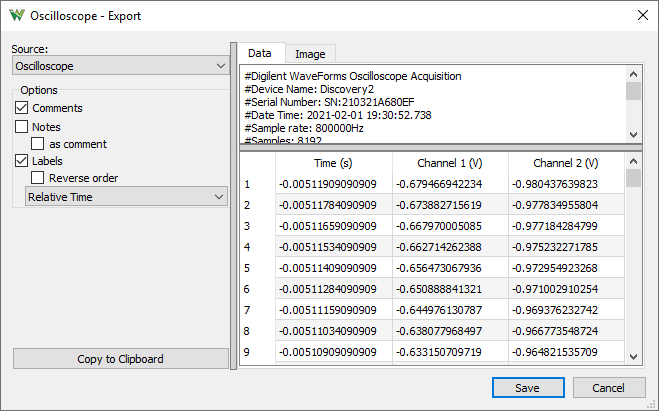
The script editor uses JavaScript language to create custom Math channels in Scope, custom waveform patterns in WaveGen, and Logger channel functions. These expect mathematical functions which will be called and applied to each sample of the input value (data or X).
The specific objects and variables available in each of these can be found under the Insert menu Locals group. Besides these, the standard script elements are the following:
The custom measurements in Scope expect a more complex script, where the value in the last line is the result. You may need to implement a loop to process the acquisition data.
For further information see Script Code.
The Logging tool allows you to save data on each acquisition or to execute custom script code. This is available in the Scope, Logic and Spectrum Analyzer instruments.
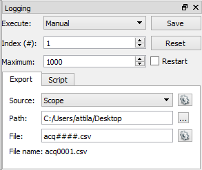 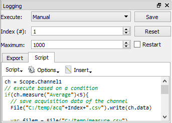
| Expression | Output |
| d | the day as a number without a leading zero (1 to 31). |
| dd | the day as a number with a leading zero (01 to 31). |
| ddd | the abbreviated localized day name (e.g., 'Mon' to 'Sun'). Uses the system locale to localize the name. |
| dddd | the long localized day name (e.g., 'Monday' to 'Sunday'). Uses the system locale to localize the name. |
| M | the month as a number without a leading zero (1-12). |
| MM | the month as a number with a leading zero (01-12). |
| MMM | the abbreviated localized month name (e.g., 'Jan' to 'Dec'). Uses the system locale to localize the name. |
| MMMM | the long localized month name (e.g., 'January' to 'December'). Uses the system locale to localize the name. |
| yy | the year as a two digit number (00-99). |
| yyyy | the year as a four digit number. |
| h | the hour without a leading zero (0 to 23 or 1 to 12 if AM/PM display). |
| hh | the hour with a leading zero (00 to 23 or 01 to 12 if AM/PM display). |
| H | the hour without a leading zero (0 to 23, even with AM/PM display). |
| HH | the hour with a leading zero (00 to 23, even with AM/PM display). |
| m | the minute without a leading zero (0 to 59). |
| mm | the minute with a leading zero (00 to 59). |
| s | the second without a leading zero (0 to 59). |
| ss | the second with a leading zero (00 to 59). |
| z | the milliseconds without leading zeroes (0 to 999). |
| zzz | the milliseconds with leading zeroes (000 to 999). |
| AP or A | use AM/PM display. A/AP will be replaced by either “AM” or “PM”. |
| ap or a | use am/pm display. a/ap will be replaced by either “am” or “pm”. |
| t | the timezone (for example “CEST”). |
The Notes view lets you add description to the projects.
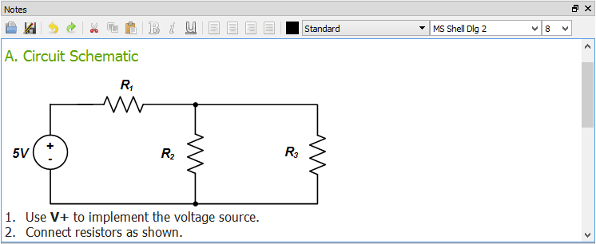
The active instruments (Oscilloscope, Wavegen, Logic, and Patterns) step through states while acquiring or generating a signal.
From each of these instruments, multiple instances can be opened at a time, however, only one instance can be active. When more instruments of the same type are opened, the last used instance (after pressing Run or Stop) controls the device. The others display a Busy status.
The following diagram illustrates the states of the Arbitrary Waveform Generator and Digital Pattern Generator.
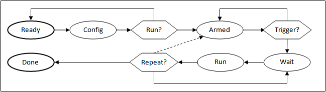
The Repeat cycle can be configured to include or exclude Trigger.
If any setting (frequency, duty, signal type, etc.) is modified from any state, it goes right to the Config state. If the instrument was running, it will be started again.
The Electronics Explorer board has four trigger IO pins, the Analog Discovery has two. They are used by the Oscilloscope, Arbitrary Waveform Generators, Logic Analyzer, and Digital Pattern Generator instruments. The trigger event is by default the rising edge of the trigger signal, but it can be configured to be the falling or either edge.
An instrument's trigger output is high while in Run state.
By default the run time is continuous in Wavegen and Patterns, so these will toggle their trigger outputs when started or stopped.
To have repetitive trigger event specify a finite run time in Patterns and Wavegen, after selecting an other option than "No synchronization".
Any of these instruments can be triggered by any of the trigger signals coming from external pins or the other instruments.
The Waveform Generator channels can function as independent instruments, having their own controller, or in synchronized mode when the selected channels are controlled by one state controller.
The input instruments (Oscilloscope and Logic) have a trigger detector based on their input channels.
The Manual Trigger event is generated by pressing the button under the main window device menu. On the Electronics Explorer board, this trigger event is generated when the board switch is turned to the on position as well.
The None trigger mode configuration in the instruments means that acquisition or generation doesn't wait for a trigger, it starts immediately.
The Auto trigger mode for input instruments means that if the trigger condition doesn't appear in maximum from two seconds and holdoff value plus the specified time span, acquisition is started automatically.
In multiple acquisition mode, when the instruments switch to Auto trigger, subsequent acquisitions are made without waiting for timeout as long as a trigger event does not occur and the configuration is not changed. When a new trigger event occurs or the configuration is changed, the current acquisition is finished and the next one waits for the trigger. It is also the best mode to use if you are looking at many signals and do not want to set the trigger each time.
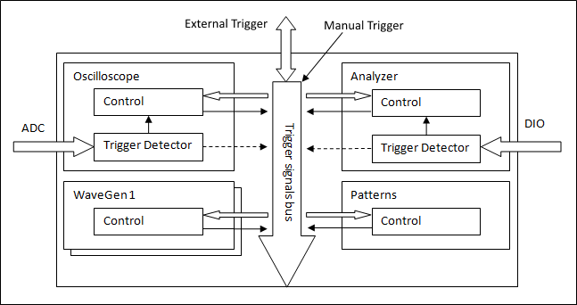
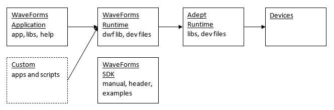
For Microsoft Windows® the digilent.waveforms_v#.#.#_64bit.exe installer contains the following sections:
For MacOS® the digilent.waveforms_v#.#.#.dmg Apple Disk Image file contains the following:
For Linux the digilent.waveforms_v#.#.#_[i386|amd64|armhf|arm64].[deb|rpm]:
The installer for Windows® has the following command line arguments:
The following are the command line arguments for the WaveForms application:
For projects, the instrument is opened and project loaded:
For instance:
> C:\Program Files (x86)\Digilent\WaveForms3\WaveForms.exe myworks.dwf3work -runscript
$ waveforms myworks.dwf3work -runscript
When working with multiple devices and WaveForms instances the initial workspace loading will try to connect to the workspace device if it is available by
$ waveforms -app 1 work1.dwf3work
$ waveforms -app 2 work2.dwf3work
$ waveforms -app 1 -runscript
$ waveforms -app 2 -runscript